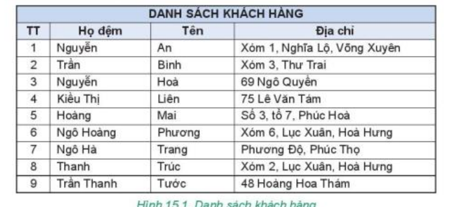
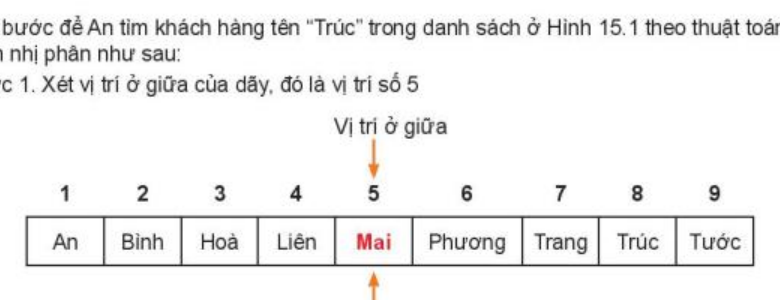
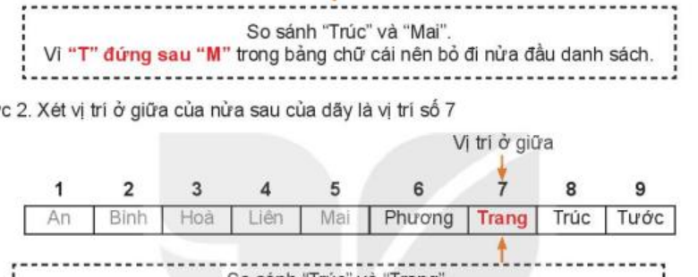
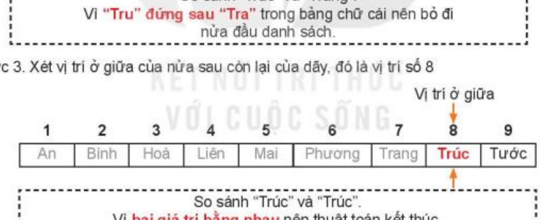

KẾ HOẠCH BÀI DẠY
MÔN: TIN HỌC 7 – BỘ SÁCH KẾT NỐI TRI THỨC VỚI CUỘC SỐNG
CHỦ ĐỀ 5: GIẢI QUYẾT VẤN ĐỀ VỚI SỰ TRỢ GIÚP CỦA MÁY TÍNH
BÀI 15: THUẬT TOÁN TÌM KIẾM NHỊ PHÂN
Thời gian thực hiện: 1 tiết (45 phút) – SGK trang 74–76
I. MỤC TIÊU
1) Kiến thức
Giải thích được ý tưởng của thuật toán tìm kiếm nhị phân: chia đôi danh sách và loại bỏ một nửa sau mỗi bước.
Biểu diễn và mô phỏng được các bước của thuật toán tìm kiếm nhị phân trên một danh sách có kích thước nhỏ (danh sách 9 khách hàng, Hình 15.1).
Nêu được mối liên quan giữa sắp xếp và tìm kiếm: tìm kiếm nhị phân chỉ thực hiện trên danh sách đã được sắp xếp.
So sánh được số bước của tìm kiếm tuần tự (8 bước) và tìm kiếm nhị phân (3 bước) khi tìm khách hàng "Trúc".
2) Năng lực
a) Năng lực chung
Tự chủ và tự học: tự đọc SGK trang 74–76, quan sát các bước tìm kiếm nhị phân để rút ra kiến thức.
Giao tiếp và hợp tác: thảo luận nhóm, phối hợp đóng vai mô phỏng thuật toán, lắng nghe và nhận xét bạn.
Giải quyết vấn đề và sáng tạo: đề xuất được cách thu hẹp vùng tìm kiếm nhanh trên dữ liệu đã sắp xếp.
b) Năng lực Tin học
NLc (Giải quyết vấn đề với sự trợ giúp của công nghệ thông tin và truyền thông): diễn đạt được các bước của thuật toán tìm kiếm nhị phân bằng ngôn ngữ tự nhiên; so sánh số bước thực hiện của hai thuật toán tìm kiếm trên cùng một bộ dữ liệu.
NLd (Ứng dụng công nghệ thông tin và truyền thông trong học và tự học): sử dụng sơ đồ, bảng mô phỏng để tự kiểm tra kết quả tìm kiếm của mình.
c) Năng lực số (NLS)
1.1.TC1 – Duyệt, tìm kiếm và lọc dữ liệu, thông tin và nội dung số (mức L6–L7): giải thích được vì sao tìm trên dữ liệu đã sắp xếp nhanh hơn, thực hiện được theo quy trình các bước tìm kiếm.
1.3.TC1 – Quản lí dữ liệu, thông tin và nội dung số (mức L6–L7): nhận biết cần sắp xếp dữ liệu để dễ lưu trữ và truy xuất (danh sách khách hàng được sắp xếp theo thứ tự chữ cái).
3.4.TC1 – Lập trình (mức L6–L7): liệt kê được các bước hướng dẫn (thuật toán tìm kiếm nhị phân) để hệ thống máy tính giải quyết một vấn đề đơn giản. [GV đối chiếu lại CV3456]
d) Năng lực Trí tuệ nhân tạo (AI)
C4 – Dữ liệu trong AI (dữ liệu "sạch"): nhận ra thuật toán chỉ cho kết quả đúng khi dữ liệu được chuẩn bị đúng yêu cầu (danh sách phải được sắp xếp); liên hệ: bộ dữ liệu "sạch" là điều kiện để các công cụ AI cho kết quả đáng tin cậy (liên hệ ngắn ở phần Vận dụng, GV tự soạn).
3) Phẩm chất
Chăm chỉ: theo dõi và thực hiện đầy đủ từng bước thuật toán.
Trung thực: ghi đúng số bước thực hiện khi mô phỏng.
Trách nhiệm: có trách nhiệm trong hoạt động nhóm.
II. THIẾT BỊ DẠY HỌC VÀ HỌC LIỆU
1. Giáo viên
Kế hoạch bài dạy, bài giảng điện tử có Hình 15.1, 15.2 và 3 bước tìm "Trúc"; máy tính, máy chiếu.
Bộ 9 thẻ tên cỡ lớn đã sắp xếp theo thứ tự chữ cái: 1. An, 2. Bình, 3. Hoà, 4. Liên, 5. Mai, 6. Phương, 7. Trang, 8. Trúc, 9. Tước (hoạt động đóng vai).
Phiếu học tập số 1 (cuối bài); bộ 5 câu hỏi trắc nghiệm trên Quizizz/Wordwall (GV tự soạn, nội dung ở mục Luyện tập).
2. Học sinh
SGK Tin học 7 (Kết nối tri thức với cuộc sống), trang 74, 75, 76; vở ghi, bút.
III. TIẾN TRÌNH DẠY HỌC
1. Khởi động (5 phút)
a) Mục tiêu:
Tạo nhu cầu tìm cách tìm tên khách hàng nhanh hơn trong danh sách rất dài; gợi mở ý tưởng sắp xếp danh sách và mở ngay ở giữa.
b) Nội dung: HS đọc tình huống khởi động (SGK trang 74); thử thách "15 giây" giữa danh sách chưa sắp xếp và danh sách đã sắp xếp (GV tự soạn); thảo luận cặp đôi.
c) Sản phẩm: HS đề xuất: sắp xếp danh sách theo thứ tự chữ cái; khi tìm không đọc từ đầu mà mở ở giữa danh sách (như tra từ điển) rồi loại bỏ một nửa.
d) Tổ chức thực hiện:
| Hoạt động của giáo viên | Hoạt động của học sinh |
|---|---|
Bước 1: Chuyển giao nhiệm vụ
| Bước 1: Chuyển giao nhiệm vụ
|
Bước 2: Thực hiện nhiệm vụ
| Bước 2: Thực hiện nhiệm vụ
|
Bước 3: Báo cáo, thảo luận
| Bước 3: Báo cáo, thảo luận
|
Bước 4: Kết luận, nhận định
| Bước 4: Kết luận, nhận định
|
2. Hoạt động 1: Thuật toán tìm kiếm nhị phân – ví dụ tìm khách hàng "Trúc" (10 phút)
a) Mục tiêu:
Giải thích được ý tưởng và mô phỏng được 3 bước của thuật toán tìm kiếm nhị phân khi tìm khách hàng tên "Trúc" trong Hình 15.1 (SGK trang 74–75).
b) Nội dung: HS đọc mục 1 (trang 74–75), tham gia đóng vai mô phỏng 3 bước tìm "Trúc" trên 9 thẻ tên, hoàn thành Phiếu học tập số 1 (cuối bài).
c) Sản phẩm: Kết quả mô phỏng 3 bước tìm "Trúc" (vị trí giữa 5 – Mai, 7 – Trang, 8 – Trúc); Phiếu học tập số 1.
d) Tổ chức thực hiện:
| Hoạt động của giáo viên | Hoạt động của học sinh |
|---|---|
Bước 1: Chuyển giao nhiệm vụ

| Bước 1: Chuyển giao nhiệm vụ
|
Bước 2: Thực hiện nhiệm vụ
| Bước 2: Thực hiện nhiệm vụ
|
Bước 3: Báo cáo, thảo luận
   | Bước 3: Báo cáo, thảo luận
|
Bước 4: Kết luận, nhận định
| Bước 4: Kết luận, nhận định
|
3. Hoạt động 2: Sắp xếp và tìm kiếm; mô tả thuật toán (15 phút)
a) Mục tiêu:
So sánh được số bước của tìm kiếm tuần tự và tìm kiếm nhị phân; nêu được điều kiện danh sách phải được sắp xếp (Hoạt động 1 – Sắp xếp và tìm kiếm, SGK trang 75; mục 2, trang 76).
Mô tả được thuật toán tìm kiếm nhị phân bằng ngôn ngữ tự nhiên (5 bước, trang 76).
b) Nội dung: Nhiệm vụ 1: trả lời hai câu hỏi của Hoạt động 1 (trang 75). Nhiệm vụ 2: đọc 5 bước mô tả thuật toán, Hình 15.2, Lưu ý và Hộp ghi nhớ (trang 76).
c) Sản phẩm: Câu trả lời Hoạt động 1 (8 bước so với 3 bước; điều kiện danh sách đã sắp xếp); 5 bước mô tả thuật toán; nội dung ghi nhớ (xem ô Dự kiến bước 3, 4).
d) Tổ chức thực hiện:
| Hoạt động của giáo viên | Hoạt động của học sinh |
|---|---|
Bước 1: Chuyển giao nhiệm vụ
| Bước 1: Chuyển giao nhiệm vụ
|
Bước 2: Thực hiện nhiệm vụ
| Bước 2: Thực hiện nhiệm vụ
|
Bước 3: Báo cáo, thảo luận
| Bước 3: Báo cáo, thảo luận
|
Bước 4: Kết luận, nhận định
| Bước 4: Kết luận, nhận định
|
4. Luyện tập (10 phút)
a) Mục tiêu:
Vận dụng thuật toán tìm kiếm nhị phân để mô phỏng chính xác các bước tìm khách hàng "Hoà" (câu hỏi cuối mục 1, SGK trang 76).
Củng cố điều kiện áp dụng, cách xác định vị trí giữa và số bước thực hiện.
b) Nội dung: Nhiệm vụ 1 (tự luận): viết các bước tìm "Hoà" trong Hình 15.1. Nhiệm vụ 2 (trắc nghiệm): 5 câu hỏi nhanh trên Quizizz/Wordwall (GV tự soạn dựa trên SGK trang 74–76; nội dung và đáp án ở ô Dự kiến).
c) Sản phẩm: Lời giải tìm "Hoà" (3 bước, tìm thấy ở vị trí 3); kết quả trả lời 5 câu trắc nghiệm (đáp án: 1 – B, 2 – B, 3 – B, 4 – A, 5 – A).
d) Tổ chức thực hiện:
| Hoạt động của giáo viên | Hoạt động của học sinh |
|---|---|
Bước 1: Chuyển giao nhiệm vụ
| Bước 1: Chuyển giao nhiệm vụ
|
Bước 2: Thực hiện nhiệm vụ
| Bước 2: Thực hiện nhiệm vụ
|
Bước 3: Báo cáo, thảo luận
| Bước 3: Báo cáo, thảo luận
|
Bước 4: Kết luận, nhận định
| Bước 4: Kết luận, nhận định
|
5. Vận dụng (5 phút)
a) Mục tiêu:
Vận dụng ý tưởng tìm kiếm nhị phân vào tình huống có nhiều dữ liệu hơn; nhận ra vai trò của dữ liệu được chuẩn bị đúng, "sạch" (C4).
b) Nội dung: Bài toán thư viện 10.000 cuốn sách (GV tự soạn, mở rộng từ nội dung bài, không có trong SGK) và một câu hỏi thảo luận ngắn.
c) Sản phẩm: Số bước tối đa khi tìm tuần tự và tìm nhị phân; câu trả lời cho câu hỏi thảo luận.
d) Tổ chức thực hiện:
| Hoạt động của giáo viên | Hoạt động của học sinh |
|---|---|
Bước 1: Chuyển giao nhiệm vụ
| Bước 1: Chuyển giao nhiệm vụ
|
Bước 2: Thực hiện nhiệm vụ
| Bước 2: Thực hiện nhiệm vụ
|
Bước 3: Báo cáo, thảo luận
| Bước 3: Báo cáo, thảo luận
|
Bước 4: Kết luận, dặn dò
| Bước 4: Kết luận, dặn dò
|
IV. PHỤ LỤC HỌC LIỆU VÀ CÔNG CỤ ĐÁNH GIÁ
1. Phiếu học tập số 1: Khám phá thuật toán tìm kiếm nhị phân
Nhóm: .......................... Lớp: 7...... Thời gian: 5 phút
Dựa vào hoạt động đóng vai và SGK trang 74, 75, hoàn thành bảng mô phỏng các bước tìm tên "Trúc" trong danh sách 9 khách hàng (1. An, 2. Bình, 3. Hoà, 4. Liên, 5. Mai, 6. Phương, 7. Trang, 8. Trúc, 9. Tước):
| Bước | Vùng tìm kiếm hiện tại | Vị trí giữa và giá trị | So sánh và quyết định thu hẹp vùng |
|---|---|---|---|
| Bước 1 | Vị trí 1 đến 9 (An ... Tước) | Vị trí 5: Mai | "Trúc" đứng sau "Mai" nên bỏ nửa đầu [1..5]; vùng mới là [6..9]. |
| Bước 2 | Vị trí 6 đến 9 (Phương ... Tước) | Vị trí 7: Trang | "Trúc" đứng sau "Trang" nên bỏ nửa đầu [6..7]; vùng mới là [8..9]. |
| Bước 3 | Vị trí 8 đến 9 (Trúc, Tước) | Vị trí 8: Trúc | "Trúc" bằng "Trúc": tìm thấy tại vị trí 8; thuật toán kết thúc. |
2. Bảng đánh giá (rubric) năng lực số và năng lực AI trong tiết học
| Thành tố năng lực | Mức 1: Cần cố gắng | Mức 2: Đạt | Mức 3: Tốt |
|---|---|---|---|
| NLS 3.4.TC1 – Lập trình | Chưa xác định đúng vị trí giữa; lúng túng khi thu hẹp vùng tìm kiếm. | Xác định đúng vị trí giữa và mô phỏng được các bước khi có hỗ trợ. | Mô phỏng thành thạo, diễn đạt mạch lạc các bước bằng ngôn ngữ tự nhiên. |
| NLS 1.3.TC1 – Quản lí dữ liệu | Chưa nhận ra danh sách cần được sắp xếp trước khi tìm nhị phân. | Nêu được điều kiện danh sách đã sắp xếp, so sánh được 8 bước và 3 bước. | Giải thích được mối liên hệ giữa sắp xếp và tìm kiếm; tính được số bước tối đa với danh sách lớn. |
| NL AI – C4 Dữ liệu trong AI | Chưa hiểu vì sao dữ liệu cần được chuẩn bị đúng. | Nêu được thuật toán/AI chỉ cho kết quả đúng khi dữ liệu đúng yêu cầu. | Liên hệ được với bộ dữ liệu "sạch" của AI bằng ví dụ cụ thể. |